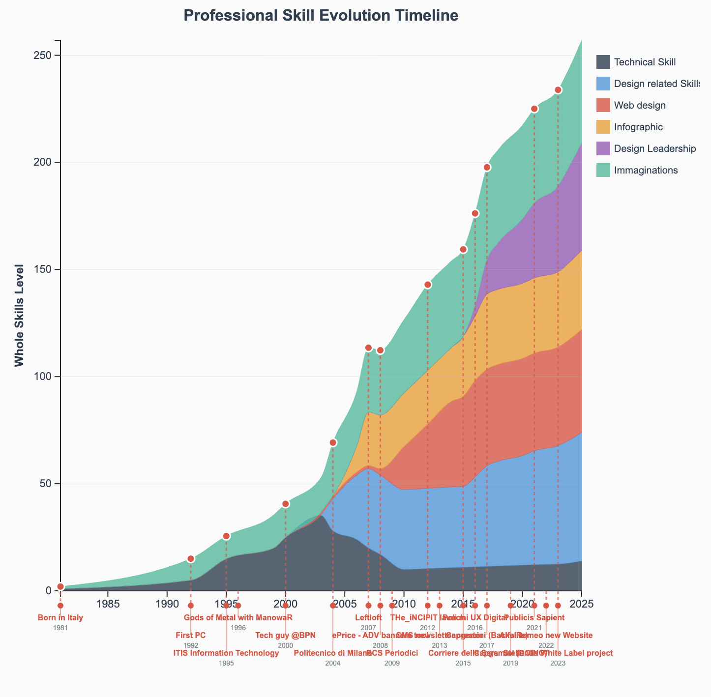

Lista Progetti
Il gioco di parole in inglese è molto bello e rende bene l'idea di cosa faccia un designer.
Se vuoi vedere i miei progetti vai in fondo alla pagina. Se vuoi capirli, continua a leggere.
Il mio approccio al mestiere è semplice e vago allo stesso modo di questa definizione. In italiano serve spendere qualche parola in più anche solo per chiarire il significato di quel verbo "to design" che sostantivato da luogo alla professione del Designer.
Inoltre, quando si parla di Design Leadership, di User research e di Business transformation, ci si sposta dalla tautologia vaga a qualcosa di ancora più sfumato ed evanescente.
Design, ormai non si traduce più. Abbiamo la settimana del Design milanese, abbiamo arredi di Design, abbiamo meme che ironizzano sul "DiDesign", io stesso prendevo in giro chi la usava, prima di diventare un Designer, ossia colui che compie il design.
Le scelte che si possono fare per tradurre questa azione sono limitate: alcuni preferiscono progettare ad un più infantile disegnare. Forse perché come grafici abbiamo sempre avuto il senso di inferiorità di chi si occupava della decorazione mentre nelle altre stanze, i grandi, parlavano di business e di soldi, tracciando grafici con excel.
Anche io ero della scuola del "progetto", se non che "disegno", in un senso più ampio ne è un sinonimo. Si pensi al disegno divino. Oggi però ci troviamo in un mondo dove design non si può tradurre più con nessuno dei due concetti. Se una caffettiera o un divano possono essere può essere disegnata, se un servizio o un processo industriale possono essere progettati, cosa dovremmo dire di strategie di governance, di allineamento di obiettivi o di value storytelling?
Propongo senza nessuna umiltà di italianizzare la parola inglese, come faremmo con un qualsiasi verbo da videogioco. Se to download diventa download_are, se to respawn diventa respawn_are, se to lag diventa lagg_are, Design deve necessariamente diventare Design_are. Meglio ancora se letto all'italiana: diventa designare: derivato dal latino Signum «segno», significa indicare, proporre, determinare, stabilire, denotare, significare.
Il design oggi è questo. Non si tratta più solo di linee armoniose, o di creazione di una catena produttiva. Si tratta di dare un significato, di proporre una strada, di indicare delle possibili soluzioni e definire quella, di volta in volta, più adatta.
Come fare però a designare. Come indicare la via da seguire a clienti e colleghi che devono creare una soluzione tangibile?
È necessario praticare della teoria e teorizzare la pratica. È necessario sapere come si fanno le cose, saperle fare e saper spiegare quello che si è fatto. Un designer di sedie deve conosce il legno e la sega e i motivi che spingono le persone a sedersi, un designer di siti web deve conoscere i linguaggi di programmazione, i computer e i motivi che portano le persone a navigare online. Un designer di esperienze cosa deve conoscere?
Ammesso che sia vero che uno UX designer debba "Definire le strategie digitali per allineare gli obiettivi di business con i bisogni reali degli utenti", cosa deve fare per compiere questo allineamento?
Abbiamo un po' di ingredienti: la strategia da definire, adesso possiamo dire Designare; gli obiettivi del business: cioè fare più soldi; i bisogni degli utenti, che hanno qualcosa che li induce a spendere soldi per ottenere qualcosa a cui danno valore.
Guardiamo agli utenti, alle persone e concentriamoci sul valore. Cos'è il valore? Il valore è quell'intangibile che fa la differenza tra un'esperienza memorabile e una che è meglio dimenticare.
Per dare la caccia a quel valore occorre allargare lo sguardo al di là del digital design e poi restringerlo sul singolo pixel. La vista deve abbracciare l'infinitamente grande e l'infinitamente piccolo: i contesti di mercato e la risoluzione dei device, lo spirito del tempo e il tempo di caricamento delle pagine. Tutto è Esperienza, ogni esperienza è unica e vissuta individualmente
Capite che ottimizzare le esperienze è un compito infinito se messo in questo modo. Si utilizzano allora delle scorciatoie statistiche, tanto più pericolose quanto più prese per vere.
Si utilizzano altri concetti che "stanno per" l'esperienza. Si trovano delle metriche per misurarle e ci si affida ad esse.
Poi le si racconta in un linguaggio consulenziale, a bullet point, del tipo:
La verità è che l'esperienza sfugge, muta, è piena di contraddizioni, di non detti, di incognite. La statistica sulle percentuali di conversioni della CTA è scientifica, percentuale, posizionatile su un grafico. È possibile persino monitorarne l'andamento mese su mese. Poco importa che questa percentuale dipenda o meno dall'esperienza.
Io continuerò a Designare e a cercare di catturare il valore dell'esperienza. Se per farlo dovrò ottimizzare conversioni, diminuire il bounce rate, o ridurre il tempo di caricamento di una pagina, lo farò.
Molti progetti che ho guidato e che guiderò sono soggetti a vincoli di riservatezza, non sempre posso mostrare materiali pubblici; rimango però disponibile a discutere il mio approccio o casi specifici su richiesta. Quando sarà possibile, aggiungerò pagine dedicate ai singoli progetti all'interno di questo portfolio.
Per saperne di più o metterti in contatto: scrivimi a il.manuel.colombo @ gmail.com.

Lista Progetti
Skill Timeline Nobody borns a master, my path to what I'm now is paved of good intention, errors and learnings.
CRO and user research Nobody borns a master, my path to what I'm now is paved of good intention, errors and learnings.